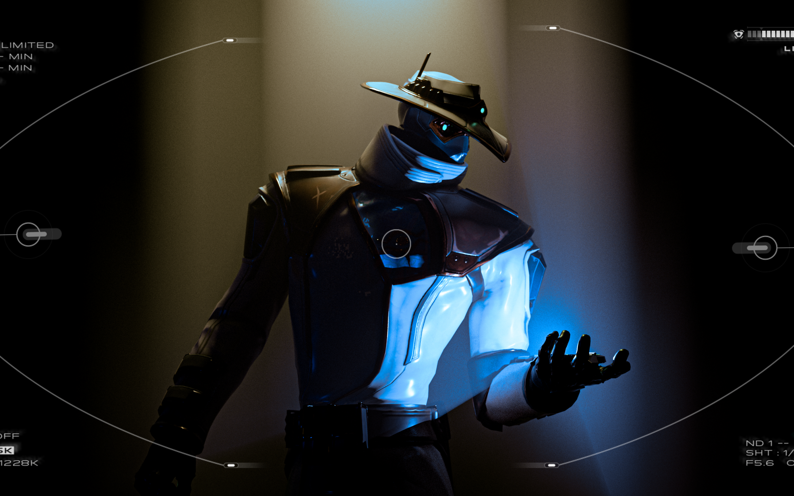
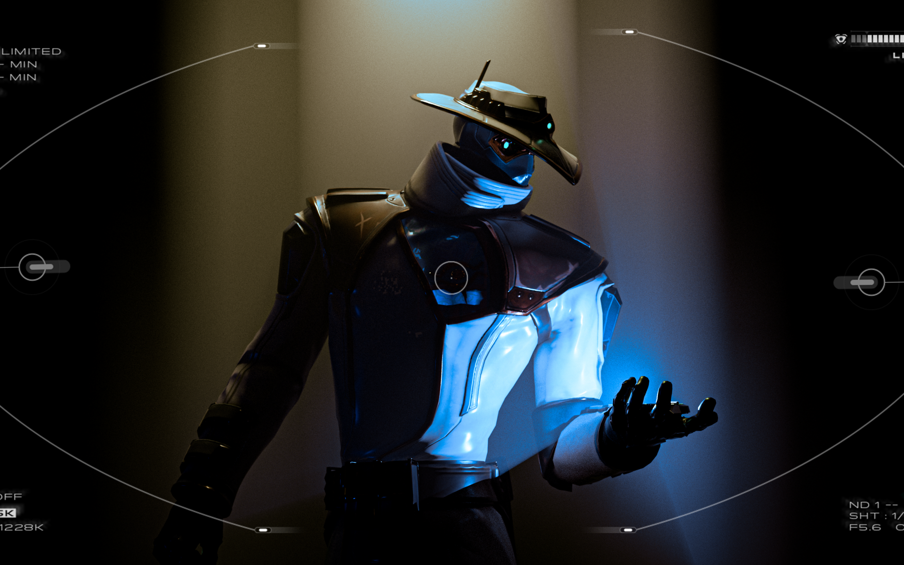
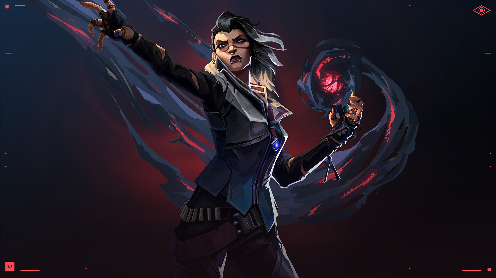
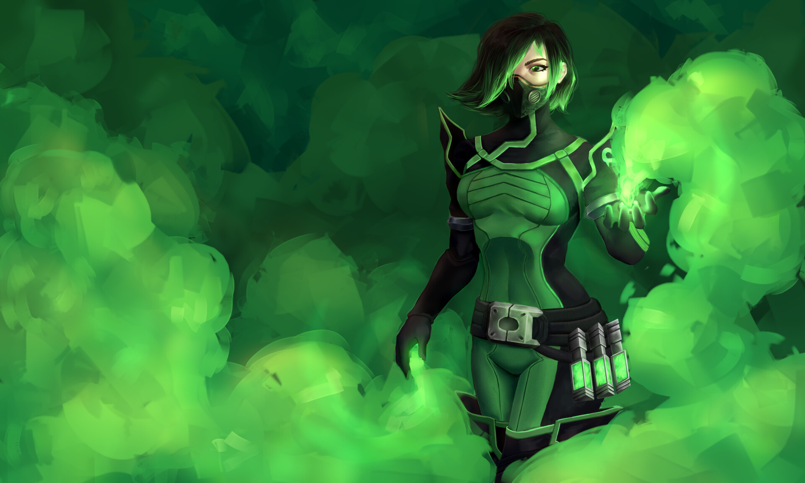
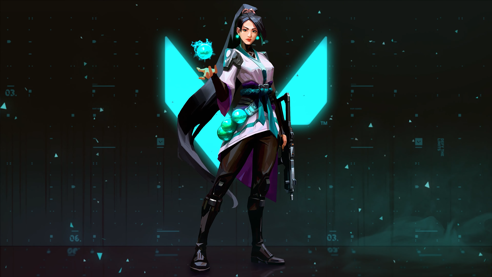
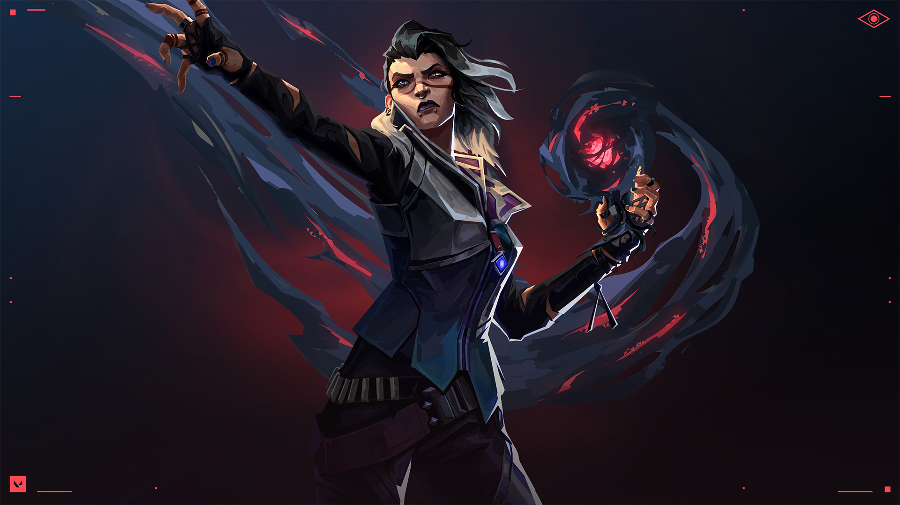
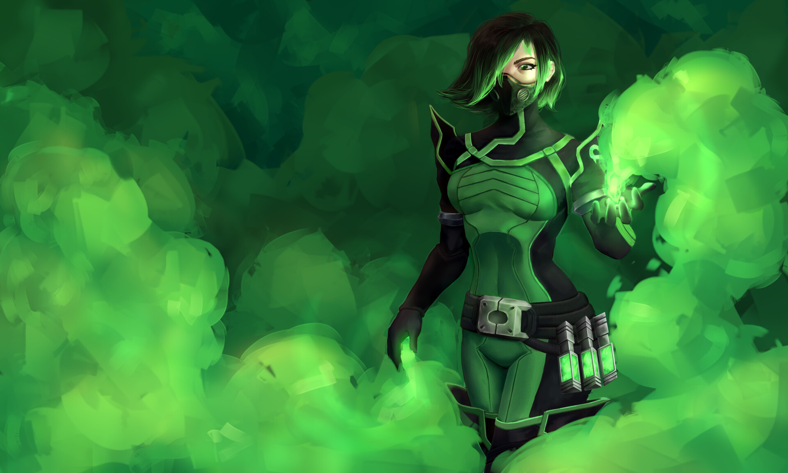
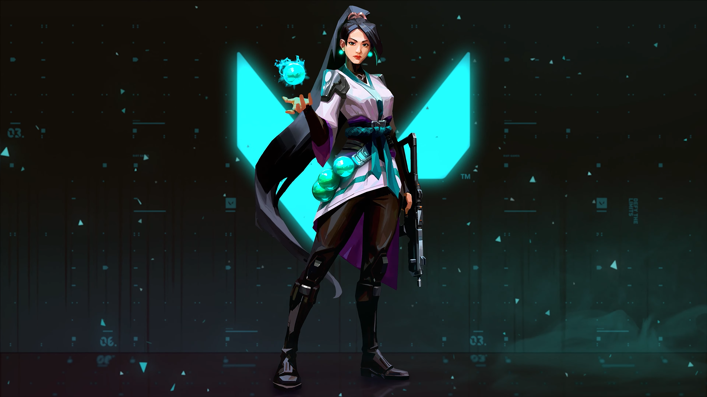

 





Raze
Raze é uma agente do VALORANT especialista em eliminar os adversários. Ela ama explosivos e permite que os jogadores que a utilizem tenham um estilo de jogo agressivo.
Sova
Sova. Nascido sob o eterno inverno das tundras russas, Sova rastreia, encontra e elimina inimigos com eficiência e precisão implacáveis. Seu arco personalizado e suas habilidades inigualáveis de reconhecimento garantem que nenhuma presa escape.
Omen
Omen, uma lembrança fantasmagórica, caça nas sombras. Ele cega os inimigos, teleporta-se pelo campo e deixa a paranoia assumir o controle enquanto o adversário tenta descobrir de onde virá seu próximo ataque.
Cypher
Cypher, um vendedor de informações do Marrocos, é uma verdadeira rede de vigilância de um homem só que fica de olho em cada movimento dos inimigos. Nenhum segredo está a salvo. Nenhuma manobra passa despercebida.
Reyna
Criada no coração do México, Reyna domina o combate individual, destacando-se a cada abate efetuado. Sua capacidade só é limitada por sua própria perícia, tornando-a bastante dependente de desempenho.
Fade
Fade, uma caçadora de recompensas turca no VALORANT, usa o poder dos pesadelos para capturar os segredos dos inimigos. Personificando o próprio terror, ela persegue os alvos e revela seus medos mais profundos para, depois, destruí-los na escuridão.
Viper
Viper, a química dos Estados Unidos, emprega uma variedade de dispositivos químicos venenosos para controlar o campo de batalha e prejudicar a visão do inimigo. Se as toxinas não matarem a presa, seus jogos mentais certamente o farão.
Sage
Sage. Como uma verdadeira fortaleza chinesa, Sage traz segurança para si mesma e para a equipe aonde quer que vá. Capaz de reviver aliados e rechaçar investidas agressivas, ela oferece um centro de calmaria em meio ao caos da batalha.